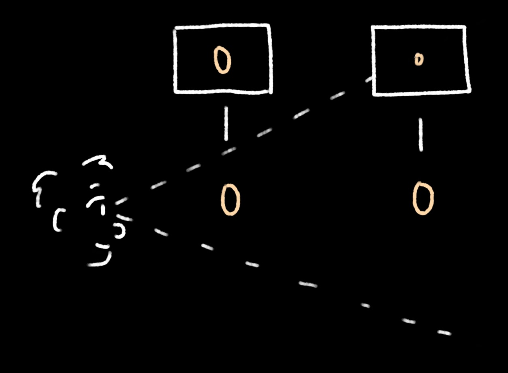
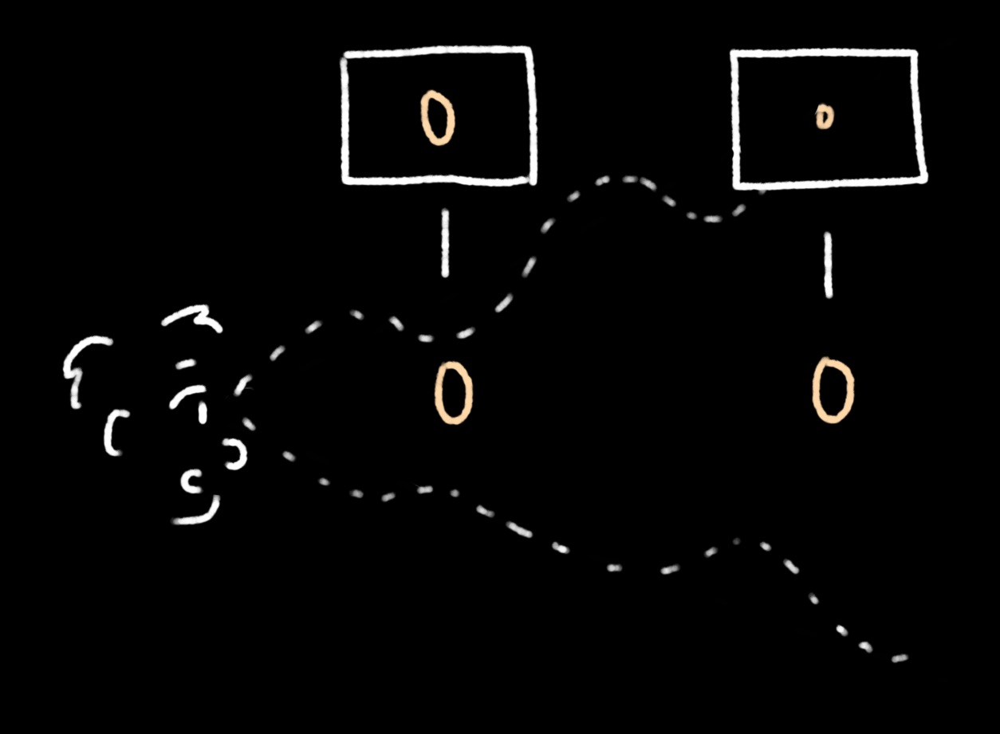
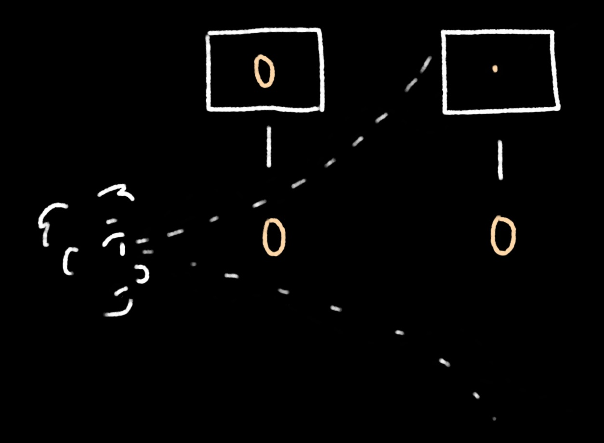
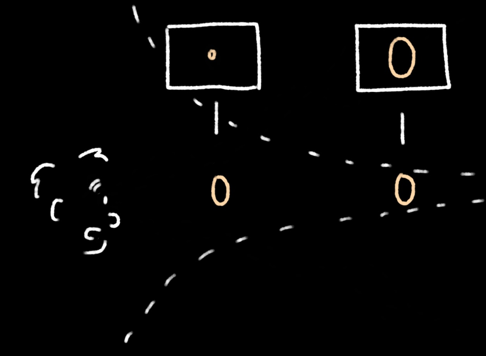

This project currently does not work in mobile browsers.
Click somewhere near the centre to begin control.
Move the cursor to look around, and use WASD keys to move.
Click again while in control to exit control.
The 'map' at the top-left corner shows your position and the direction you are facing.
Click on any of the perspectives at the bottom-left to change the type of perspective you are viewing the virtual space with.
Click anywhere to begin.
This project, called 'warpped perspective', explores how space would look like
if our field of view had a different 'shape'.
Far-away objects appear to be smaller because of our field of view 'widens' at further distances:

That is, because far-away objects take up less of the entire 'plane of view' at that point,
(i.e. the object only takes up a small portion of the cross-sectional area of the 'cone' representing the field of view at that distance)
they appear to be smaller.
With this idea in mind, what the other perspectives in this project mean are relatively simple to understand.
The 'Wavy' perspective is where the field of view is, namely, wavy:

Far-away objects would still mostly be smaller, but the wavyness is apparent, especially as one starts to move around in the virtual space.
The field of view widens exponentially in Exponential perspective:

This means that the affect of distance on the apparent size of an object is highly exaggerated,
because the 'plane of view' widens rapidly as the object gets further and further away.
Finally, we have the Inverted perspective, where far-away objects appear larger than objects that are close:

This distorts the image in an almost unrecognisable way, because it is essentially the direct opposite of what we are used to.
The virtual space here has three layers of 'planes' made up of points, two above the observer and one below.
The map at the top-left corner shows you where you are in relation to the grids and in which direction you are facing.
The 'reddest' edge of the rectangle shown on the map corresponds to the edge of the grids where the points are 'reddest' in hue.
Comparing what you see and what is shown on this map may help in visualising what is happening in each of the four perspectives.
×